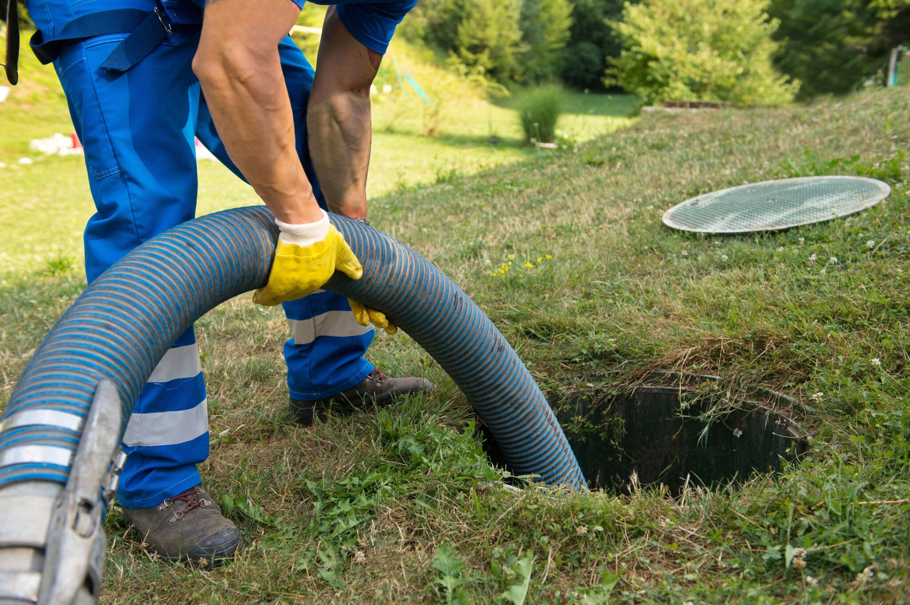

Multiple drains backing up
Sinks, tubs, and toilets all draining slowly or backing up at once — usually the main line, not one fixture.
Backed-up drains, sewage smells, or multiple slow drains at once? We diagnose and repair sewer line problems across Corpus Christi and the Coastal Bend.

Any one of these could be a single-fixture issue. Two or more usually means the main line.
Sinks, tubs, and toilets all draining slowly or backing up at once — usually the main line, not one fixture.
Persistent odor from drains or a patch of unusually green grass — a sign the line is leaking underground.
Air escaping through a blockage or a vent issue — often the first visible sign of a main line problem.
Wet spots or a soggy patch of grass, especially near the cleanout or the street, with no rain.
Waste water rising in the lowest fixture in the house — the classic sign of a blocked main line.
If the same line clogs again a few months after being cleared, there's usually a structural issue — roots, a break, or a bellied pipe.
Two steps: see what's actually in the line, then fix the cause.
We start with a camera inspection of the line. The camera shows us what's actually in the pipe — roots, grease, scale, a break, or a sag — and where it sits. That tells us whether it can be cleared or whether it needs to be repaired or replaced. We don't guess.
Get an estimateThe repair depends on what the camera found. A clogged line gets cleared with a cutter head. A root intrusion gets cut out, and depending on severity, may need a spot repair or a liner. A collapsed or cracked section gets excavated and replaced, or in some cases relined without digging. We quote the repair before we start.
Get an estimateSewer line work is priced by what the camera finds. A simple clear-out is a different job than a spot repair, a liner, or a full line replacement. The inspection tells us which one you're looking at.
The camera inspection has a fee, quoted upfront. The repair estimate is free once we know what needs to be done. If the line is in better shape than expected, we'll say so — a clear-out might be all you need.
Most sewer line clear-outs run $300–$600. Spot repairs, liners, and full replacements vary more — we'll quote before we start.
Straight answers to what people ask before booking a sewer service.
We run a camera down the cleanout and look at it directly. The camera shows the inside of the pipe — blockages, root intrusions, cracks, offsets, or sags. That's the only way to know what you're dealing with without digging.
It depends on how bad the intrusion is. Small to moderate root clusters can be cut out with a cutter head and the line keeps working. If the roots have cracked or shifted the pipe, or if they keep coming back, a spot repair or liner is usually the better fix.
Not always. Many repairs can be done with trenchless methods — a liner inserted through the existing pipe, or a spot repair through a small access pit. Full excavation is only needed when the pipe is collapsed or severely damaged.
Sometimes. Many policies cover sudden damage to the line but not wear-and-tear or root intrusion. Check your policy, and we can document what we find for a claim if you're filing one.
A clear-out is usually a couple of hours. Spot repairs and liners are typically a one-day job. Full replacements take longer, usually two to three days depending on length and depth.
Request a free estimate and we'll schedule a camera inspection.
Tell us what you're seeing — backups, smells, wet spots — and we'll follow up to schedule a camera inspection.
This is a demonstration form. In a live site, a team member would follow up using the contact information you provided.